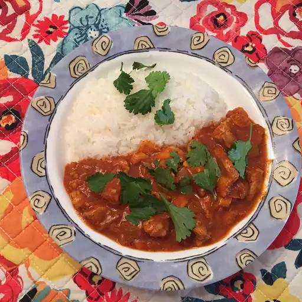

This chapati recipe is simple and delicious. Serve this Indian flatbread with curries or use it as a sandwich wrap. Enjoy!
Mix flours and salt in a large bowl. Use a wooden spoon to stir in water and olive oil. Mix until a soft, elastic dough forms and add more water, if needed. Knead dough on a lightly floured surface until smooth.
Divide dough into 10 equal portions, or less if you want larger chapatis. Roll each piece into a ball and let rest for a few minutes.
Heat a lightly greased skillet over medium heat.
Use a rolling pin to roll dough balls out on a lightly floured surface until very thin, like a tortilla.
When the skillet starts to smoke, place a chapati in it. Cook until bottom has brown spots, about 30 seconds, then flip and cook 30 seconds more. Repeat to cook remaining chapatis.